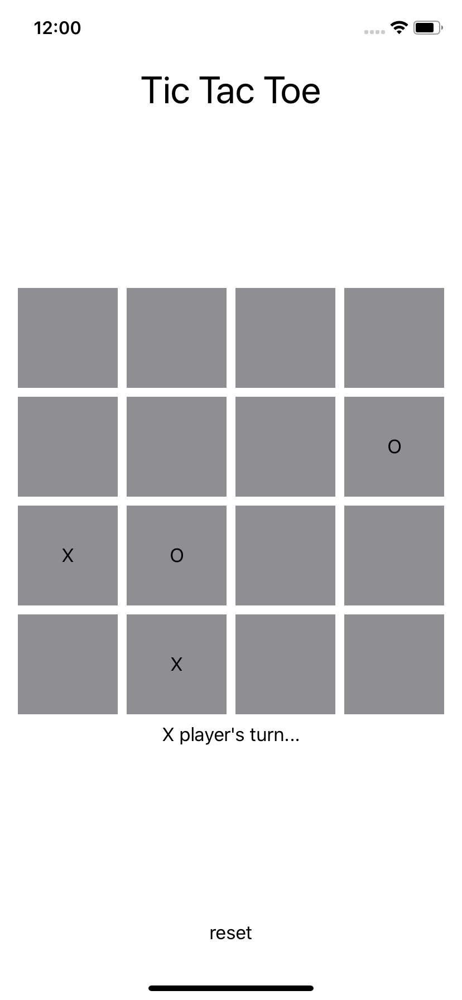

For this project, you will be implementing the game tic tac toe. You have the choice of either building a command-line game or an iOS application. If you are unfamiliar with the game, please read the [Tic Tac Toe Wikipedia page].
TicTacToeGameFor either version of the project, you will start by completing a structure called TicTacToeGame which contains all the functionality necessary for gameplay.
You will need to read through the existing code and understand what it does. You then have to fill in the methods and properties labeled TODO. You are allowed to add more methods and properties. I recommend doing this using extensions.
Note. We will allow the board to be a square grid of any size. For any size board, a player wins if they have occupied all the positions in any row, column or diagonal. There are other variations which you are welcome to implement instead!
For this version of the project, the code for running a \(3 \times 3\) game in the command line has been provided. Your task will be to write a function which makes moves for the computer player. The function makeComputerMove() is included in an extension to the TicTacToeGame structure. To implement this function, you will be using a procedure called [minimax].
Minimax is a basic algorithm for building computer players for two player games. Variations and extensions of minimax are used for chess and go playing programs (like alphaGo). It is a recursive procedure that determines the best possible move for a given player based on the following principle:
the best possible move is the one which leads to the best outcome if the other player always makes their best move.
More formally, each tic tac toe game state (a tic tac toe board with some pieces on it, or more specifically, an instance of TicTacToeGame) is given a minimax score, \(-1\), \(0\), or \(1\) according to the following rules:
The X player's best move is then the one that maximizes the minimax score of the resulting game state, and the O player's best move is the one that minimizes the minimax score of the resulting game state.
You need to implement the function makeComputerMove() which should contain an implementation of the function minimax(_:). You will know when you have succeeded if the computer player always draws or wins.
Your minimax implementation will be too slow for even a \(4 \times 4\) tic tac toe game. Usually, minimax includes a heuristic value function, which makes it faster at the cost of accuracy.
Often in games like chess or go, it is possible to look at a board and guess how likely it is that you will win. Of course, the further away either player is from winning, the harder it is to gauge whether or not you're going to win. A heuristic value function gives this intuition a numeric value, it analyzes the state of the game and returns a value between \(-1\) and \(1\) which is a measure of how good the game state is for a player. Higher is better for the X player, with \(1\) meaning that the X player is sure to win or has already won.
There is no correct way to write a heuristic value function. A heuristic in programming is a procedure that may not derived from a general principle, and whose success is not guaranteed or even necessarily understood. Part of designing a good computer player is designing a good heuristic value function. It has to be simple so that it's easy to compute, but not so simple that it's not helpful.
Implement a simple heuristic value function, together with a depth limited version of the minimax algorithm (see [this] for details). Figure out (by trial and error) what depth is reasonable to use for a \(4 \times 4\) game and try to see how good you can make the computer player using minimax with that depth and your heuristic value function. Some potential ideas for the heuristic value function:
For this version, instead of building a computer player, you will be implementing the iOS user interface for \(4 \times 4\) tic tac toe with 2 players. The UI should look something like this, though you should customize it as you want.

Regardless of layout, your UI must have the following elements.
Spacer() views).If there is a winner, then it should not be possible to add symbols to the board.
Build an iOS application for playing tic tac toe using TicTacToeGame as the model and using MVVM architecture for connecting it with the view TicTacToeView (the view is called ContentView by default, but you should rename it to TicTacToeView using Xcode's renaming tool).
Use the ideas from the video on layouts to more carefully set up the views on the screen. In particular, include the classic tic tac toe cross-hatch grid and center it vertically on the screen. For a further challenge, use rectangle and circle views to represent the symbols X and O, rather than using text.
This project is due Friday, July 24 by 6PM.
For version 1, submit a single file called TicTacToeGame.swift. You should start with the following code.
For version 2, submit a .zip file containing your entire Xcode project, which should include the .xcodeproj file and the directory with your code. You should start with the following file for the model.
You can also use the following as an outline to the TicTacToeView.swift file.